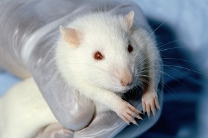

Animal testing also known as animal research is the use of non-human animals in the experiments.World wide it is estimated that the number of vertebrate animals-ranges from tens of millions to more than 100 million used annually.One estimate of mice and rats used in the United States alone in 2001 was 80 million. Most animals are ethanized after being used in an experiment.

Click here to see a pie chart on animals
Home page
Click here to know the conclusion